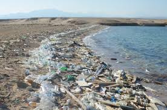

Over the past 50 years, rapid growth in human consumption, population, global trade, and urbanization has led to humanity using more of the Earth's resources than it can naturally replenish. A 2020 WWF report revealed that populations of mammals, fish, birds, reptiles, and amphibians declined by an average of 68% between 1970 and 2016. This biodiversity loss is mainly due to land-use changes, particularly converting forests, grasslands, and mangroves into agricultural systems. The illegal wildlife trade severely affects animals like pangolins, sharks, and seahorses, with pangolins critically endangered. A recent analysis indicates that the sixth mass extinction of wildlife on Earth is accelerating. Over 500 species of land animals are on the brink of extinction and may be lost within 20 years, a number equal to all the species lost in the last century. Scientists suggest that without human destruction of nature, this rate of loss would have taken thousands of years. In Antarctica, climate change is causing sea ice to melt, heavily impacting emperor penguins and potentially wiping out entire populations by 2100, according to 2023 research.
